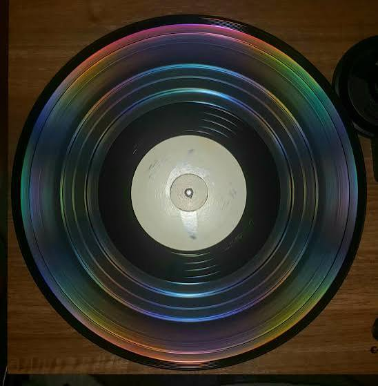

Chad Heaps - IST 250 Portfolio | Click Here To Return To Portfolio Homepage
Welcome to our learn more page! Thank you for showing interest in our store and wanting to learn more about us!
Here's Who We Are

Our small store started back in 2026, about two months ago right after we realized that we bought way too many vinyls due to Amazon's one click purchase feature. In order to be able to make back some of the money that was intended for our mortage, we decided to open our very own family Record Store, and no better name than Spinning Vinyl!
We are located, in Fawn Grove, PA. A small town with only a single Gas Station named Rutters. In hopes of bringing any joy back to the town, we knew it was the perfect place to put our store. Inside the closed post office across from the closed M&T Bank. Our beautiful little shop brining music to the town in the town we grew up in!
With recent success in the vinyl selling, we were able to sell off our entire one-click purchase stock in about two weeks. So we decided to go back to Amazon buy more vinyls and expand! We are aiming to open a store in Stewartstown PA! But since they have a Rutters and a open Post Office alongside M&T Bank, it was hard to find a place for us to go. But we found a spot in the recently closed Rite Aid, that we will soon be moving into in order to bring even more musical joy 8 miles from our home store.